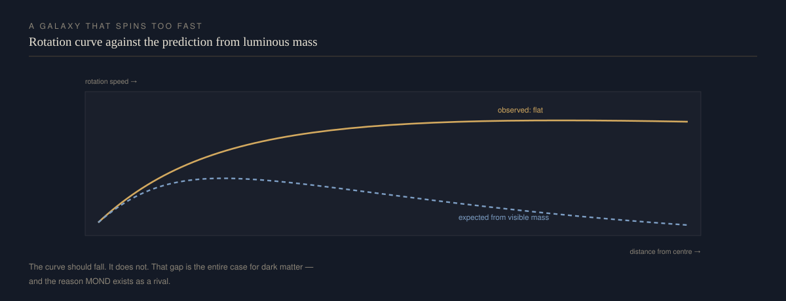
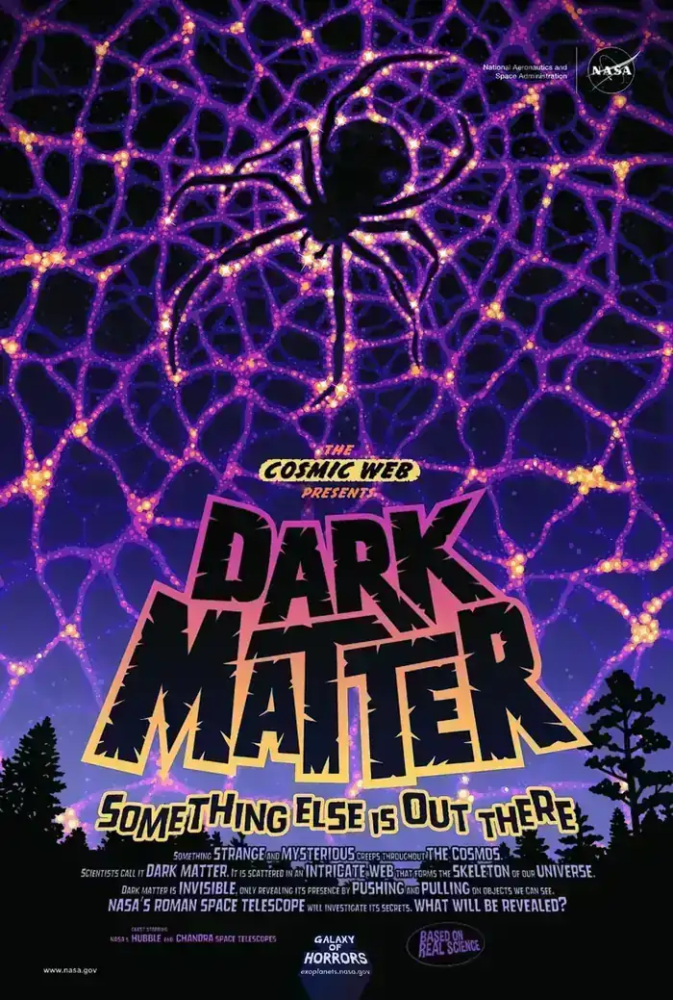
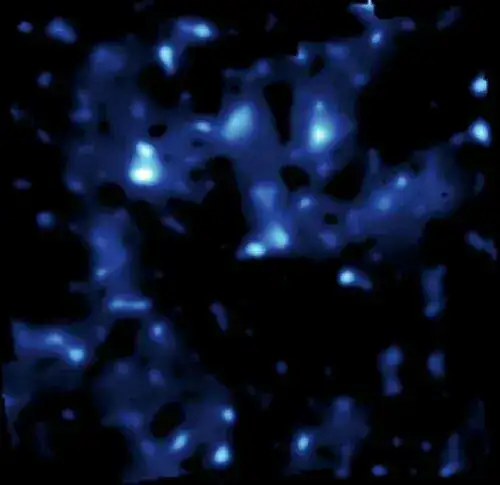
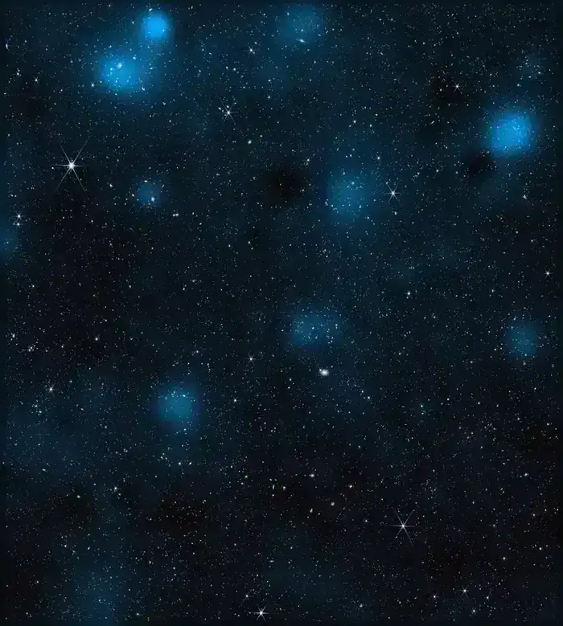

The evidence is not one measurement
Galaxy rotation curves, gravitational lensing by clusters, the temperature pattern of the cosmic microwave background, the formation of large-scale structure, and the dynamics of colliding clusters all point the same way: about five-sixths of the matter is not the matter we can see.
The CMB is the strongest single argument. Its acoustic peaks encode the ratio of ordinary to total matter, and the fit requires dark matter to be cold — slow-moving — and to interact weakly or not at all with light.
The candidates, and their scoresheets
WIMPs were the favourite for thirty years: heavy, weakly interacting, thermally produced in the early universe, and detectable in deep underground detectors. LUX, XENONnT, PandaX and others have pushed sensitivity down by orders of magnitude and found nothing. The simplest models are now strongly constrained.
Axions are ultra-light and were introduced to solve a different problem — why the strong force preserves a symmetry it need not. ADMX and haloscope experiments are searching in the plausible mass range. No detection yet, and the parameter space remains large.
Sterile neutrinos would be a fourth neutrino, heavier and non-interacting except through mixing. Some oscillation anomalies hinted at one; most have since been explained by detector effects.
Primordial black holes formed in the first second could cover part of the mass range. Microlensing surveys exclude them at many masses, but an asteroid-mass window survives — and LIGO's black-hole mergers keep the idea alive.
Four decades of null results is not proof that dark matter is wrong, but it is a signal that the field's favourite guess may have been the wrong shape. The phrase 'dark matter' describes a set of gravitational facts; it does not name a particle.
That distinction matters, because it is easy to argue against a particle nobody has found while ignoring the lensing maps that require it. Modified gravity is a serious competitor at galaxy scales, and it fails at cluster scales — which is itself informative.
What would settle it
A direct detection, a laboratory production of a dark-matter candidate, or an astrophysical signature that distinguishes particle dark matter from modified gravity. The next generation of detectors, and the next generation of sky surveys, are aimed at all three.
Until then the honest position is: the phenomenon is documented, the explanation is open, and the most popular explanation has been losing ground for a decade.
What would settle it
A direct detection with the right recoil signature would end the particle side of the argument: an excess of nuclear recoils in a xenon or argon detector, at a mass and cross-section consistent across two experiments, with the background modelled in advance. Thirty years of increasingly sensitive detectors have produced nothing at that standard, which has narrowed the allowed parameter space more than it has settled the question.
MOND has the harder problem. It fits galaxy rotation curves with one parameter and predicted the baryonic Tully–Fisher relation before it was measured, which is a genuine success. It fails at cluster scale, where the missing mass is larger than the missing acceleration, and the Bullet Cluster — where lensing mass and gas are offset — requires something invisible and collisionless. No modified-gravity model has yet accounted for that without adding dark mass back.

Sources for this page
- NASA, dark matter and dark energy overviewscience.nasa.gov
- Planck Collaboration (2020), the cosmological matter budgetwww.aanda.org
- XENONnT Collaboration, latest WIMP search resultsxenonexperiment.org
- Wikipedia, “Dark matter” — candidates and experimental limitsen.wikipedia.org
Open resources on this topic
- BookResearch Paper on dark matter — Ryan Gomez · 2025 (Internet Archive, free to read)
- BookSupersymmetric Extension of the Minimal Dark Matter Model — ['Xue Chang', 'Chun Liu', 'Feng-Cai Ma', 'Shuo Yang'] · 2017 (Internet Archive, free to read)
- BookOn dark matter — Xian-Qiao Yu · 2022 (Internet Archive, free to read)
- PapersOpen-access articles: DOAJ · PubMed Central · Internet Archive Scholar
- BooksPublic-domain and borrowable copies: Open Library · Project Gutenberg · Google Books
Cite this page
Momin, S. (2026). Dark Matter. The Larger World Archive. https://drsamonline.github.io/LARGE_GLOBE/dark-matter.htmlMomin, Sohil. “Dark Matter.” The Larger World Archive, 2026, https://drsamonline.github.io/LARGE_GLOBE/dark-matter.html.Momin, Sohil. “Dark Matter.” The Larger World Archive, 2026. https://drsamonline.github.io/LARGE_GLOBE/dark-matter.html.@misc{dark2026dark,
author = {Momin, Sohil},
title = {Dark Matter},
year = {2026},
howpublished = {The Larger World Archive},
url = {https://drsamonline.github.io/LARGE_GLOBE/dark-matter.html},
note = {Last reviewed 20 November 2026}
}Last reviewed 20 November 2026 · Corrections policy · this page is not peer reviewed
Maps, diagrams and images




